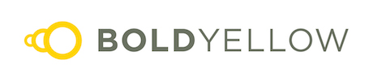

Baltimore Women in Tech Micro Grants Program
BWiT was a micro grants program designed to support Baltimore women in tech.
Run in 2017 and 2018, the BWiT program gave away $12k and supported 12 women-led projects, impacting over 3,000 people. While we do hope to run the program again, there is no concrete plan as to timeline. For more information on the program as it ran, follow the links below or read on for the original launch content.
- 2018 Impact Report
- 2018 Blog Posts: Announcement, Recipients, Retrospective
- 2018 Press: Announcement, Takeaways
- 2017 Impact Report
- 2017 Blog Posts: Announcement, Recipients, Retrospective
- 2017 Press: Announcement, Awards, Takeaways
BWiT 2018 Application
Are you looking for help to start that project you’ve been thinking about? Get funding for supporting and empowering women in the Baltimore tech community.
BWiT is a micro grants program designed to help women get more involved with the local Baltimore tech scene by providing funding to help get grassroots ideas off the ground.
SmartLogic and Bold Yellow are giving away $7,000 in micro grants to projects organized by women, for women, in the Baltimore area.
Applicants should be women (both cis and trans are welcome to apply) who have an idea or project that they believe would benefit women in the Baltimore metro area.
Some potential projects could be a women-focused hackathon, a beginner’s guide to the Baltimore tech community, or a conference bringing in women leaders in technology as speakers. We’d love to review any idea that will help support Baltimore women in tech.
Important Dates
The application deadline is April 15, 2018, and grantees will be announced on April 25, 2018.
We will hold two information sessions where we will answer any and all questions about the program. The first will be held via Google Hangouts on Monday March 26 and the second session will be held on Tuesday April 10. Both sessions will be held at 6:30pm. We’ll share the information on our twitter account one or two days before the event.
Important Links
FAQ: read the FAQ for answers to frequently asked questions. Feel free to email Chelsea Keene with any additional questions.
Terms and Conditions: T&C of the program.
Application Form: when you're ready to apply, please complete the application form.
Follow @smartlogic on twitter or like SmartLogic on Facebook for updates on this program.
Process
The application process is easy by design; we want to remove obstacles and barriers to encourage more women to apply.
The application should take fewer than 30 minutes to complete.
After you have submitted the application, the all-women selection committee will select the grant recipients.
Once the selection committee has selected the projects for funding, the grantees will have 48 hours to accept the micro grant.
The reimbursement process for funds awarded to you is just as simple as the application process. Send any receipts for expenses incurred for your project to SmartLogic. Once we receive and accept the receipts you send, you will receive the reimbursement within one week. Don’t worry, you will not have to provide all of the receipts at once!
Projects that receive a micro grant should have a projected timeline of completion by September 30, 2018. This applies only to the portion of the project that SmartLogic is funding — it does not apply to your entire project if the entire project is not funded entirely via a micro grant.
After the project is completed, the grantee will need to provide SmartLogic with a report. This report should detail how the grant money was spent, the amount of people impacted by the project, what they learned from their project, and your overall thoughts on the micro grant program.
Special Thanks
Special thanks to BoldYellow for providing a generous contribution to the 2018 micro grants program. BoldYellow's contribution adds to the pool of funds being made available to grantees in 2018.
Do you have a question that hasn’t been answered? Check out the FAQ, be sure to put the information sessions on your calendar, and/or email Chelsea Keene with any additional questions. Also keep an eye out for us at local events where we’ll talk about the program and be happy to answer any additional questions.